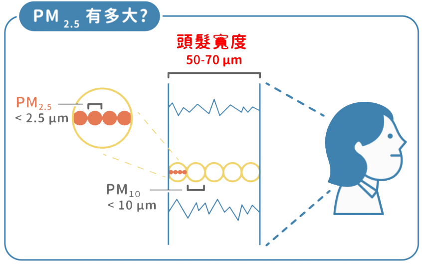

首頁
各地區即時PM2.5
各縣市即時PM2.5
- 你知道嗎？ -
細懸浮微粒PM2.5已經成為全球高度關注的新興污染物！
- 什麼是PM2.5？ -
PM
2.5
= 細懸浮微粒
= 飄散在空氣中的極微小的顆粒物質
= 懸浮微粒的粒徑

圖片來源：
美的好朋友
- 有什麼危害？ -
呼吸道疾病
咳嗽、氣喘、慢性支氣管炎、過敏
心血管疾病
血管硬化、血栓、心律不整、心肌梗塞
肺部疾病
肺癌、影響肺換氣、肺功能下降、慢性發炎
自律神經
自律神經系統失調
生殖系統
生殖能力下降
美國學者波普等人的研究，發現每
增加
10μg/m3的PM2.5，就會增加
8%
肺癌死亡率、
6%
心肺疾病死亡率與
4%
總死亡率；反之，PM2.5濃度每
下降
10μg/m3，該地區居民平均壽命就
增加0.61歲
。
- PM2.5從哪來？ -
73%
國內產生
37%
營建、道路揚塵
23%
工業
23%
車輛
9%
商業
8%
其他
27%
境外移入
中國等境外汙染
- 為了健康，我能做什麼？ -
減少能源浪費
多搭乘大眾運輸工具
多栽種綠色植物
少焚燒金紙
減少使用一次性製品
選擇環保材質工具
改善PM2.5 從生活習慣開始